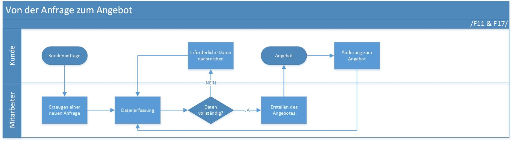
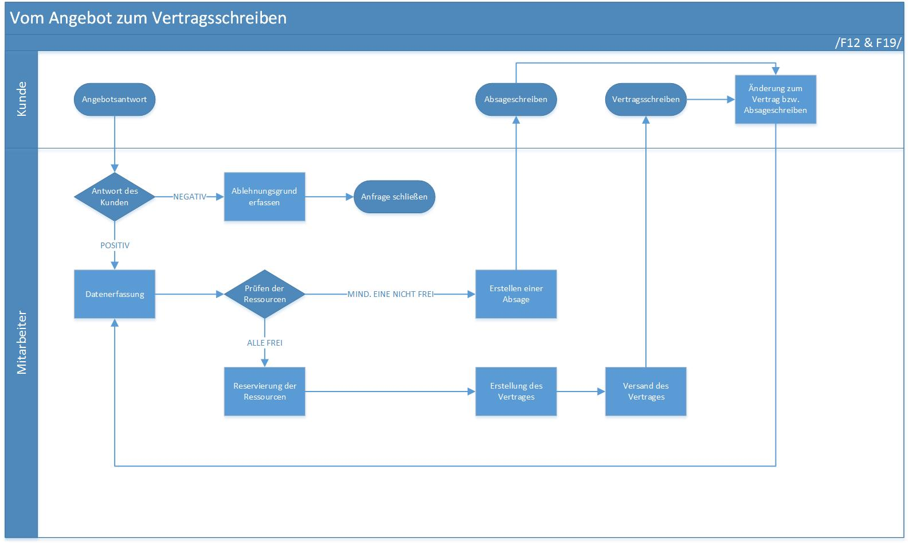
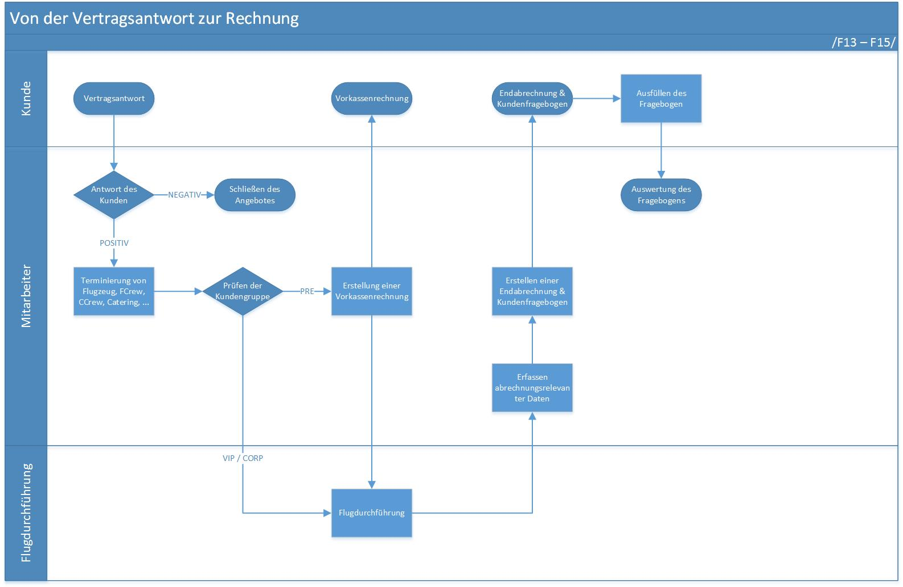
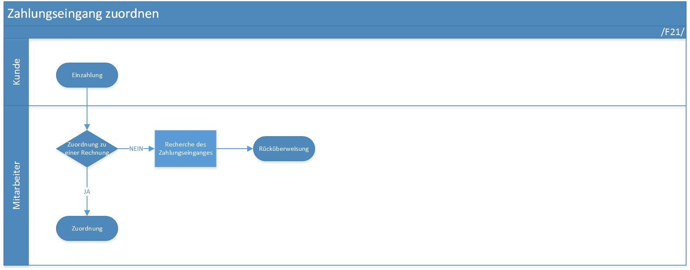
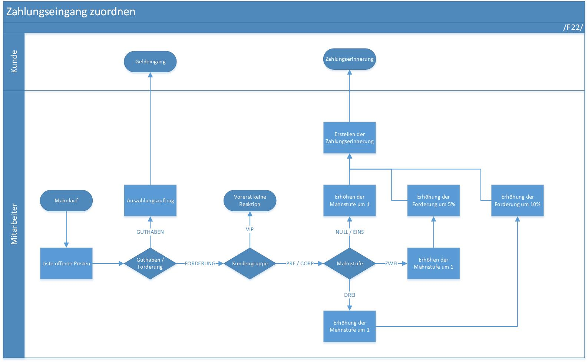
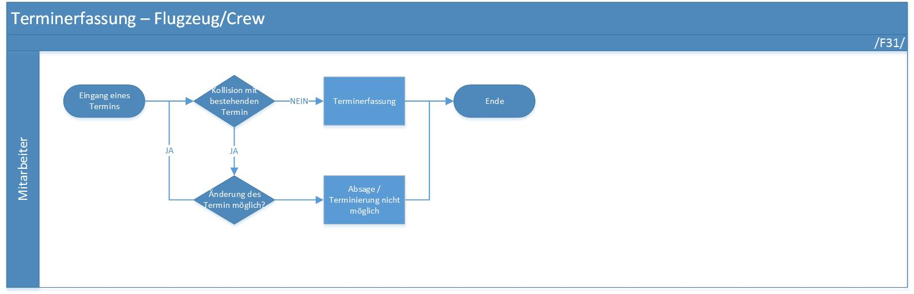
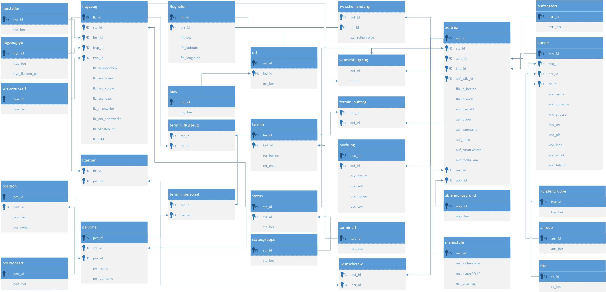
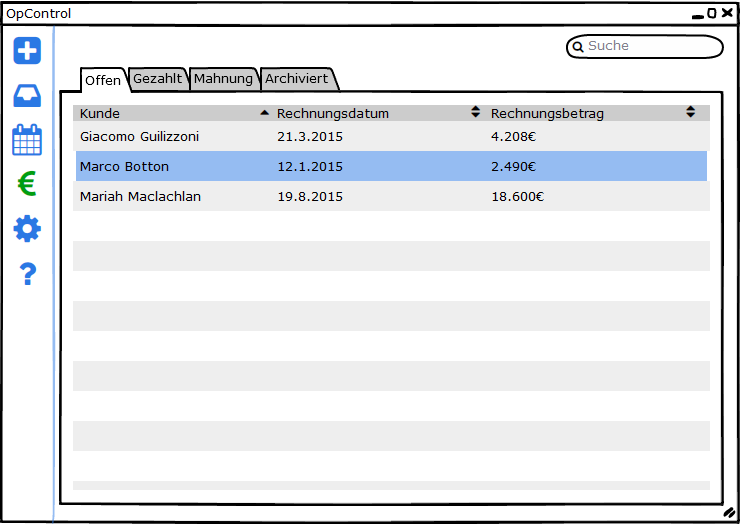

FlyHinotori
Statusbericht I
Auch verfügbar unter http://flyhinotori.github.io/docs
Einleitung
Wer sind wir?
Wie sind wir organisiert?
Wer sind wir?
- FlyHinotori
- Kompetenzen in Planung und Realisierung von Softwareprojekten
Wie sind wir organisiert?
- GitHub (https://github.com/FlyHinotori)
- Source Code
- Dokumentation
- Slack
- Interne Kommunikation
Aufbau und Durchführung
- Ziel und Zweck der Entwicklung
- Geplante Realisierung
- Verwaltete Daten
- GUI
- Tools
- Ausblick
Ziel und Zweck der Entwicklung
Was wird mit der Software möglich sein?
Allgemeine Produktbeschreibung
- Planung und Abrechnung von Charteraufträgen für Flugzeuge
- Verwaltung von Ressourcen
- Annahme: Wenn Personal nicht gebucht ist, steht es bereit
- Mahnwesen
Allgemeine Produktbeschreibung
- Automatisierung
- Kostenkalkulation
- Angebotsschreiben
- Verträge
- Rechnungen
- Zahlungserinnerungen und Mahnschreiben
Allgemeine Produktbeschreibung
- Thick Client Anwendung
- Keine Webkomponenten
Einsatzgebiet
- Benutzergruppen
- Bürofachkräfte
- Manager
- Einzelplatzanwendung
- Betrieb nur zu Geschäftszeiten
Einsatzgebiet
| Hardwareanforderungen | |
|---|---|
| Prozessor: | 1 GHz oder schneller |
| RAM: | 2 GB |
| Festplattenkapazität: | 20 GB |
| Softwareanforderungen | |
|---|---|
| Betriebssystem: | Microsoft Windows 7 oder höher |
| Sonstiges: | .NET Framework 4.5, Office Word, Email client |
Geplante Realisierung
Wie werden die Anforderungen umgesetzt?
Verwaltete Daten
Welche Daten werden verwaltet?
Geschäftsprozesse
- Erfassen von Kundenanfragen (Angebote)
- Bearbeiten von Antworten zu Angeboten & Verträgen
- Flugnachbereitung
- Erfassen der Kundenzufriedenheit
- diverse Visualisierungen & Änderungsmöglichkeiten
- Erfassen von Zahlungseingängen
- Mahnwesen
- Erfassen von Terminen für Personal und Ausrüstung
Anfrage & Angebot
- Anfrage des Kunden
- Erstellen des Angebotes
- Ändern des Angebotes
- Datenerfassung: Kontaktdaten, individuelle Daten des Fluges

Angebotsantwort & Vertrag
- Angebotsantwort
- Reservierung von Ressourcen
- Erstellen des Vertrages
- Datenerfassung: Nacherfassung von Kundenwünschen und Ablehnungsgründen

Vertragsantwort & Rechnungslegung
- Vertragsantwort
- Terminierung der Ressourcen
- Erstellen der Vorkassenzahlung & Endabrechnung
- Datenerfassung: abrechnungsrelevante Flugdaten

Zahlungseingang
- Zuordnung von Zahlungseingängen
- Datenerfassung: Zahlungseingänge

Mahn- & Regulierungslauf
- Feststellen überfälliger Zahlungen
- Erstellen von Mahnungen
- Setzen von Mahnstufen
- Regulierung von Überzahlungen

Terminverwaltung der Ressourcen
- Flugzeuge: Wartungsarbeiten, Reparaturen, ...
- Personal: Urlaub, Krankheit, ...
- Datenerfassung: Datum, Terminart

Produktdaten
Überblick über die verwalteten Daten
Stammdaten
- Flugzeugdaten (Hersteller, Triebwerksarten)
- Personaldaten (Position)
- Flugziele (Ort, Land)
- Ablehnungsgründe
- Titel
- Anrede
Bewegungsdaten
- Termine
- Aufträge
- Buchungen

Statistische Auswertungen
Komplexität des Datenmodels = Variabilität der statistischen Auswertung
- Top 10 (Wunschcrew, Flugzeug, Flugziele, Ablehnungsgründen)
- Durchschnittliche Zahlungsdauer nach Kundengruppen
- Welcher Pilot hat welche Lizenz?
GUI
Wie ist die Benutzeroberfläche aufgebaut?
Spaß kann sein, muss aber nicht
Benutzer sollten bei der Verwaltung nicht nur die Daten vor Augen haben
Windows Apps
Seit kurzen gibt es universelle Windows Apps
Windows Kacheln werden damit auf
allen Plattformen verfügbar
Der Nutzer im Mittelpunkt
Der Nutzer im Mittelpunkt

Der Nutzer im Mittelpunkt
Der Nutzer im Mittelpunkt

Der Nutzer im Mittelpunkt

Design Leitlinien
- Orientiere dich an Windows-Leitlinien
- Hilf dem Benutzer
- Fokussiere die Aufgabe
- Vermeide optische Störfaktoren
Tools
Womit arbeiten wir?
Kommunikation mit Slack
- Chats in verschiedenen Channeln
- GitHub Integration
- gute Sichtbarkeit und Nachverfolgung
- Slack is kostenlos
Code bei GitHub
- Öffentlich, also für alle verfügbar
- übersichtlich, schnell zu verstehen
- Viele Services die einfach einzubinden sind
CI und Tests bei AppVeyor
- Builds für jede Änderung möglich
- Gute Integration in die Arbeit mit GitHub und Slack
- öffentlich, also für jeden nachvollziehbar
Ausblick
Was ist wann zu erwarten?
Der Masterplan